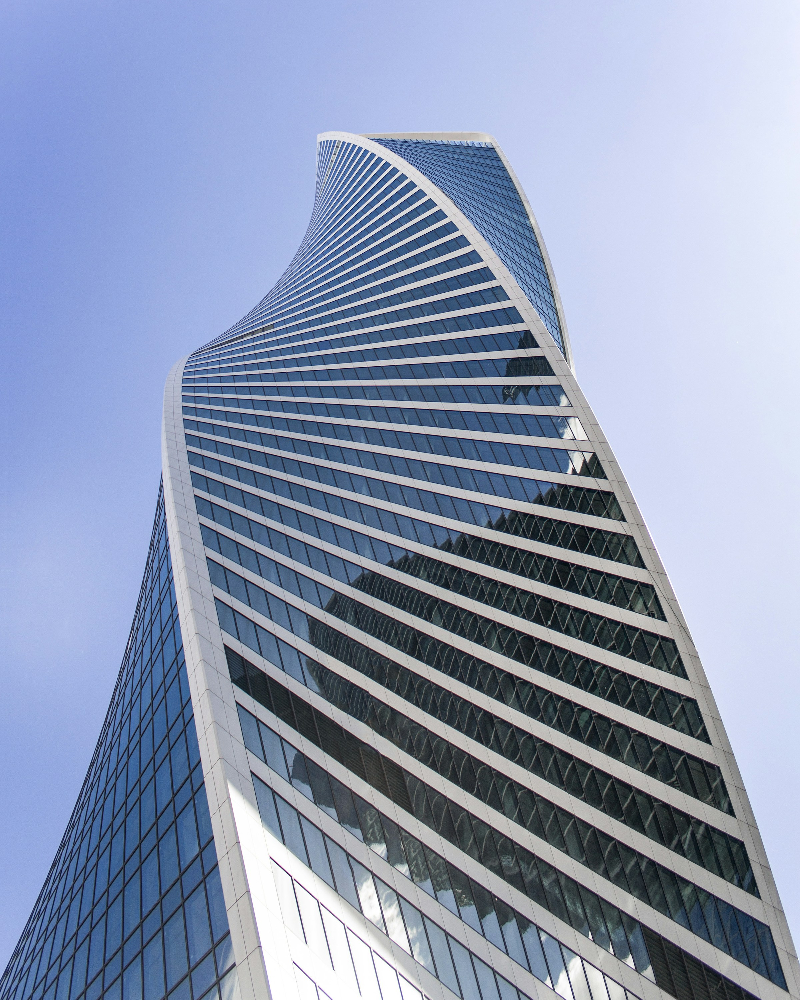
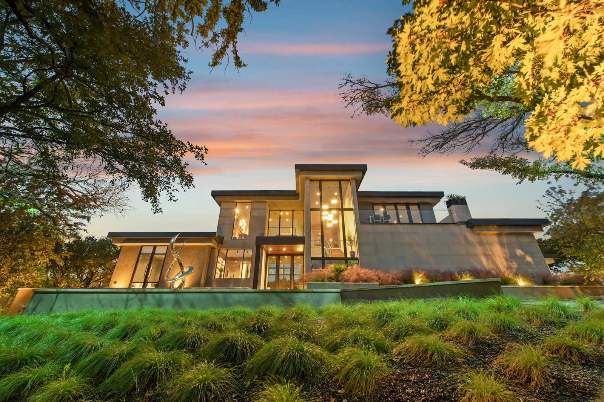
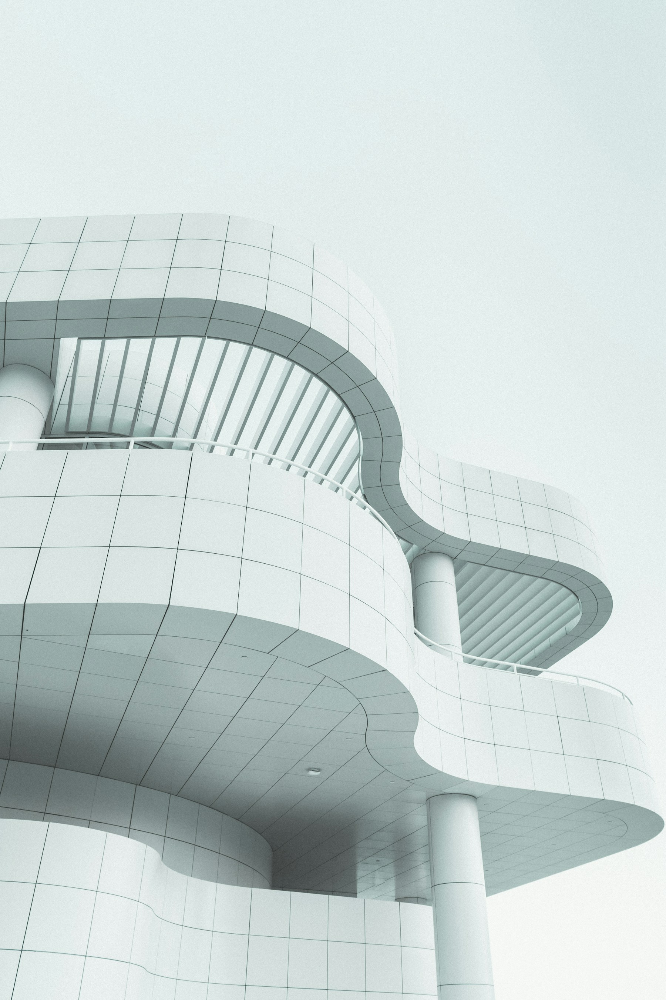

Arquitetura residencial
Casas e edifícios residenciais que aproximam funcionalidade, conforto e identidade.

PALHOÇA · GRANDE FLORIANÓPOLIS
Arquitetura que conecta pessoas,
espaços e possibilidades.
Somos a Verte Arquitetura e Construção. Nascemos em 2012, em Palhoça, para transformar necessidades em espaços pensados para a vida.
Atuamos em Palhoça e na Grande Florianópolis, com projetos diversificados, acompanhamento de obra e projetos complementares. Do espaço de morar ao desenho da cidade, cada projeto começa com uma boa conversa.
Soluções para morar, trabalhar,
construir e desenvolver a cidade.
Casas e edifícios residenciais que aproximam funcionalidade, conforto e identidade.
Projetos para negócios e edificações que integram diferentes usos em um mesmo lugar.
Projetos para espaços de produção, armazenamento e operações comerciais.
Desenvolvimento de loteamentos com um olhar integrado para o território e seus espaços.
Soluções técnicas que se integram à arquitetura e às necessidades de cada edificação.
Presença técnica durante a execução, aproximando as decisões de projeto da construção.
Forma, luz e relação com o entorno.
Referências que ampliam o olhar
sobre o que um espaço pode ser.


Imagens de referência arquitetônica internacional. Não representam projetos executados pela Verte.